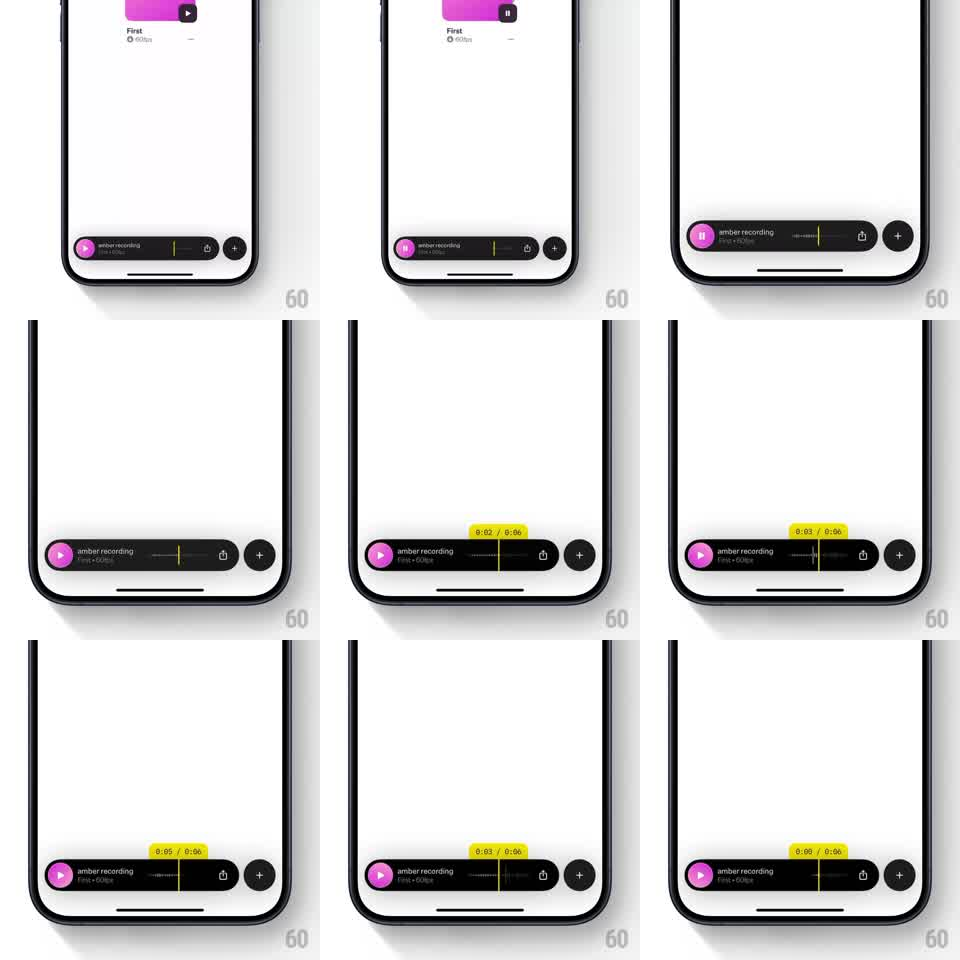

Media
Frame-by-frame

Rebuild this interaction 1:1: scrubbing a mini player's progress track pops a yellow timestamp tooltip above the bar that tracks the finger with a springy lag and reads out the seeked position ("0:02 / 0:06").

Rebuild this interaction 1:1: scrubbing a mini player's progress track pops a yellow timestamp tooltip above the bar that tracks the finger with a springy lag and reads out the seeked position ("0:02 / 0:06").
## Integration
Integration: stack-agnostic spec - springs given as stiffness/damping, timed motions as duration + curve; map every value to your framework and animation library of choice.
## Scene
Dark mini player bar at the bottom of a light screen: pink circular play button, "amber recording / First - 60fps" label, a thin progress track, share and plus buttons. During scrub: a bright yellow pill tooltip floats above the bar showing "0:02 / 0:06" in dark text.
## Motion spec
Pattern: drag-to-seek with springy tracking tooltip.
- Touch down on the track: yellow tooltip pops in above the touch point (scale 0.6 -> 1, spring ~400/22, ~180ms) and the playhead jumps to the touch x.
- Drag: tooltip x tracks the finger with a light spring lag (~600/30) so it feels attached but alive; text updates live at 1s precision.
- Release: seek commits (haptic tick), tooltip scales out and fades (~150ms); the bar's progress resumes from the new position.
- Track itself stays visually thin - the tooltip is the only scrub affordance.
## Calibration
- Tooltip stays fully on-screen: clamp x so the pill never clips the bar's edges.
- The lag spring is subtle (a few px of trail) - it should read as weight, not delay.
## Reduced motion
Tooltip appears/disappears without scale spring; position updates instantly.
## Don't miss
- The yellow pill is high-contrast against both the dark bar and the light screen.
- Time text is monospace-steady: the pill width doesn't jitter as digits change.